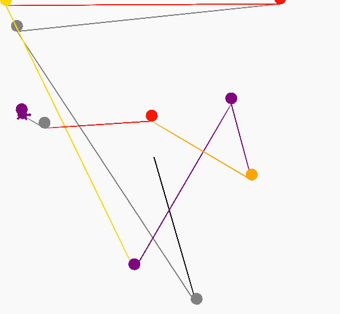

Random Circles
In this exercise we will draw 10 random circles on the screen. We will use the random function randint(min, max) that will generate a random number between the minimum and maximum values. Since we are drawing on a grid that goes from -200 to 200 here is the random function:
myNumber = random.randint(-200, 200)
After this line runs, the variable myNumber will be assigned some random number between -200 and 200. We will then use this number to go to that location before we draw a circle.
Sample Code
import turtle
import random
dan = turtle.Turtle()
dan.shape('turtle')
distance = 50
angle = 90
# draw a circle at a random location on the screen
for i in range(10):
x = random.randint(-200, 200)
y = random.randint(-200, 200)
dan.goto(x,y)
# draw a circle
dan.circle(5)
dan.goto(0,0)
dan.write('done with random')
Drawing

Draw 10 circles example on Trinket
Experiments
Can you change the name of the function to be "petal"?